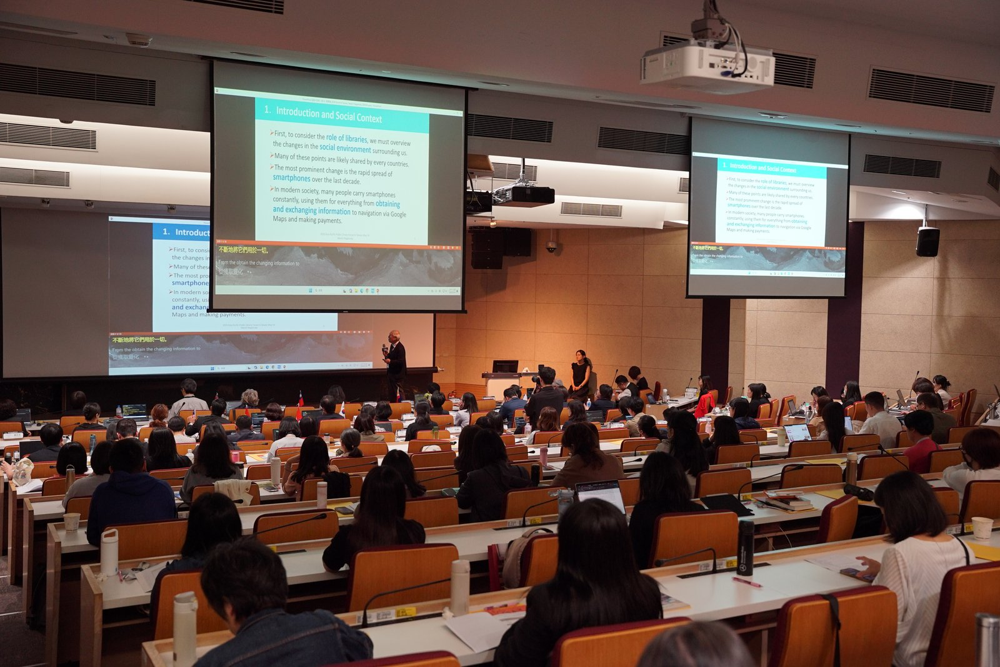

CASE STUDIES
Felo Subtitles 導入事例 国際会議・観光・学会・メディアの現場で。
多言語字幕とリアルタイム翻訳が、組織や言語の壁を越えるあらゆる現場で活用されています。
多様な業界・規模のお客様の取り組みと成果をご紹介します。

国立公共資訊図書館（NLPI）様
8カ国・地域 14名の登壇者を、QR 字幕共有とカスタム語彙表で多言語化
2026 Asia-Pacific Public Library Forum（APPLFTW）で、英中双方向のリアルタイム字幕を参加者全員のデバイスに同時配信。
詳細を見る arrow_forward福岡県 AI 活用事業
福岡空港・博多駅で 20 言語以上のインバウンド支援
福岡県の AI 活用事業に Felo Translator が正式採用。スタッフの語学力に依存しない 24 時間多言語対応を実現。
詳細を見る arrow_forward
福岡市
World Workation Conference で市長スピーチの AI 同時通訳字幕
福岡市長スピーチを含む複数セッションで AI 同時通訳字幕を採用。海外ゲストとの双方向コミュニケーションを実現。
詳細を見る arrow_forward
JCOM 株式会社
浅草サンバカーニバル 英語ライブ配信でリアルタイム字幕生成
英語ライブ放送でリアルタイム字幕ツールとして採用。国際向け配信の標準ツールとして継続利用中。
詳細を見る arrow_forward
先進医療学会
専門用語の多い研究会議でも、ほぼ正確に文字起こし
先進医療学会の国際セッションで Felo Subtitles の同時通訳を活用。専門用語の翻訳精度に高い評価。
詳細を見る arrow_forward
Teamz Summit 2025
アジア最大級ブロックチェーン会議を 4 言語同時処理
Teamz Summit 2025 の複数セッションで採用。4 言語同時処理で、各国参加者の理解を支えた。
詳細を見る arrow_forward
S創 上海・北京サミット
上海 5 会場同時運用を経て、公式翻訳ツールとして採用
S 創 上海サミットの 5 会場同時運用を経て、翌北京サミットでも継続採用。
詳細を見る arrow_forward
某大手通信企業
日中合同カンファレンスで同時通訳コストを大幅削減
対面・オンライン参加者の双方向同時通訳を、ハイブリッド形式で実現。
詳細を見る arrow_forward― 導入事例は順次公開中 ―
国際会議・学会・観光・メディアまで、Felo Subtitles の活用シーンは広がり続けています。
貴社・貴団体に近い規模の事例をお求めの方は、お問い合わせより個別にご案内いたします。
あなたの組織の国際イベント・多言語セッションでも、
Felo Subtitles の活用をご検討ください
国際フォーラム・カンファレンス、企業の海外向けウェビナー、研修、社内会議など、あらゆる多言語アクセシビリティのニーズに対応します。